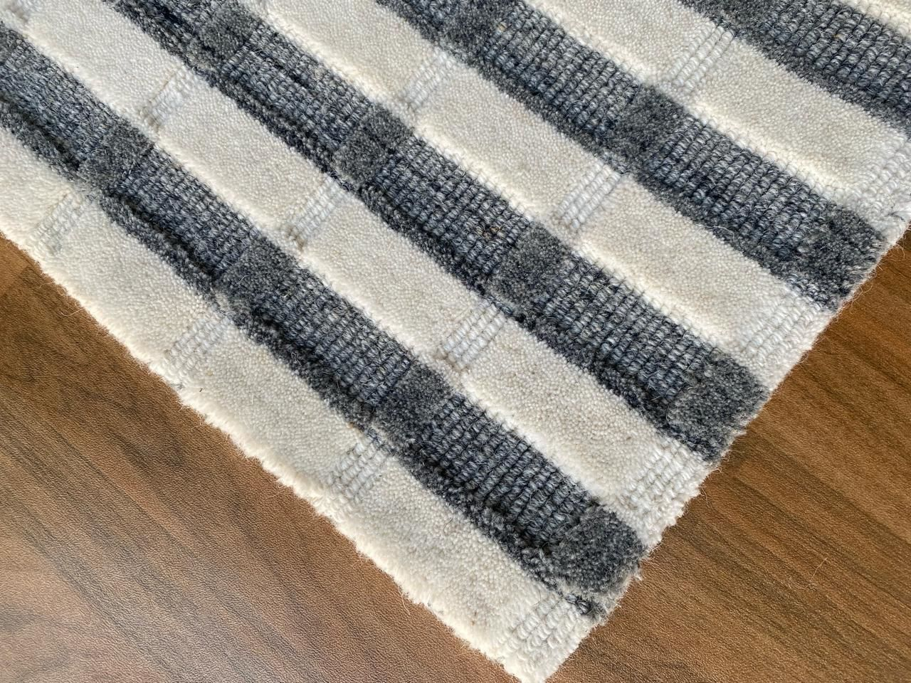

Handloom rug collection
Ivory Grid
A warm, textural handloom rug created for residential, hospitality and custom home-furnishing programmes.
Request a quote →
Product gallery
Designed with depth and softness

Product details
Made to fit your brief.
Ivory Grid balances a soft neutral palette with a refined linear pattern. It can be developed in alternate colourways, dimensions, textures and finishing details to suit your market.
Our team can support OEM and private-label production from initial design discussion through packing for shipment.
Material
100% Wool
Construction
Handloom
Category
Area rug
Sizes
Custom available
Customisation
Colours, sizes & designs
Private label
Available
Interested in Ivory Grid?
Share your target size, quantity, delivery market and any custom requirements. We’ll guide you to the right next step.
- Custom sizes and colourways
- OEM and private-label support
- Export packing available